회사소개
비전
연혁
사업실적
인증현황
오시는길
유역통합물관리
도시물순환
물순환체계
나무여과상자
식물재배화분
무관리 옥상녹화
모듈형 침투통
레인가든
침투도랑
농촌유역관리
고효율 인공습지
소규모 공공하수처리
해외사업
제품 및 소재
생산시설
다공성세라믹담체
빗물머금석
포러스샌드
LID용 식생토
KR
EN
CN
제품 및 소재
제품 및 소재
포러스샌드
포러스샌드
포러스샌드(다공모래)
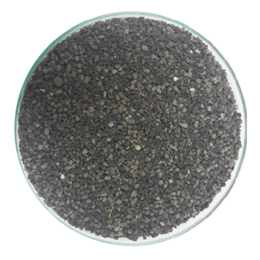
포러스샌드(G)
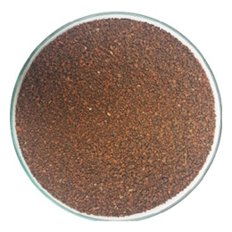
포러스샌드(R)
개요
다공성의 그레뉼로 구성된 모래 대체제로서 다양한 크기의 공극으로 인하여 보습성이 우수할 뿐만 아니라 다짐계수가 높아 토목 공사용 기반제 활용이 우수함.
최적의 투수 속도(13~201m/m)를 유지시켜 식생토 혼합재로 활용이 가능하며 토양이 경화되는 현상을 방지할 수 있어 다양하게 활용이 가능함.
일반모래와 포러스샌드의 투수 비교
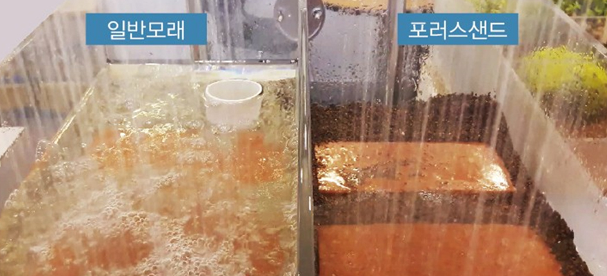
포러스샌드 특성
투수율(투수계수 10-²m/m)의 적절성
공극률 50% 이상 확보하여 빠른 배수
자체강도를 가져 다짐강도 유지
입자별로 분류하여 틈새투수포장, 전면포장 등 다양한 용도로 활용 가능
적용처
LID 관련
투수포장
모래여과
포러스샌드 적용 예
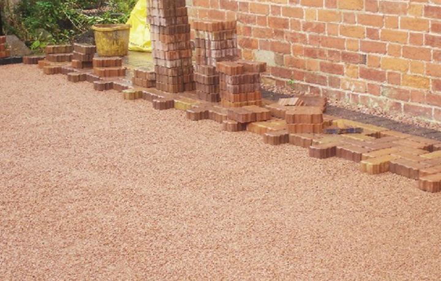
투수포장
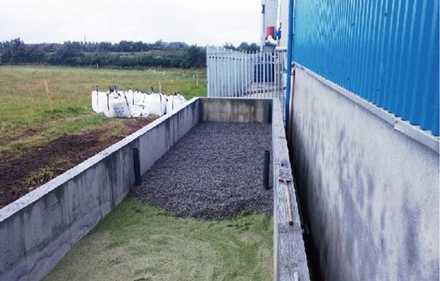
모래여과
포러스샌드 VS 일반모래 VS 쇄석의 공국 비교 확대 사진
포러스샌드
(Porous sand)
일반모래
(sand)
쇄석
(Broken stone)
30배율
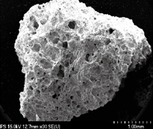
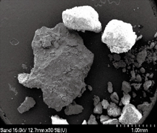
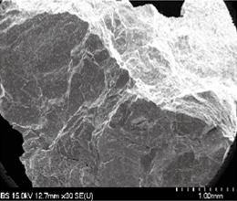
500배율
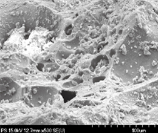
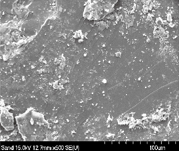
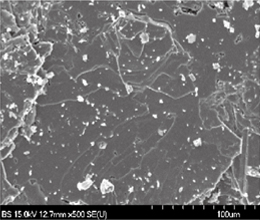
2000배율
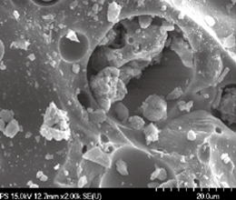
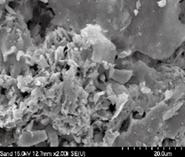
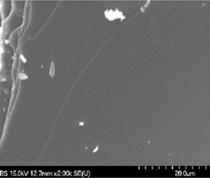